Le mode d’emploi du studio T-shirt & mug, de la commande MTN MoMo et du tableau de bord Elembo.
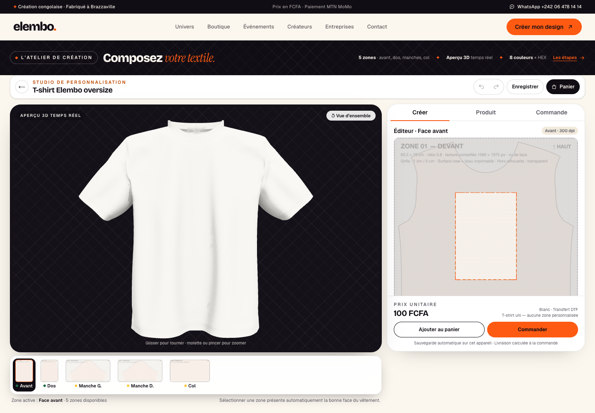
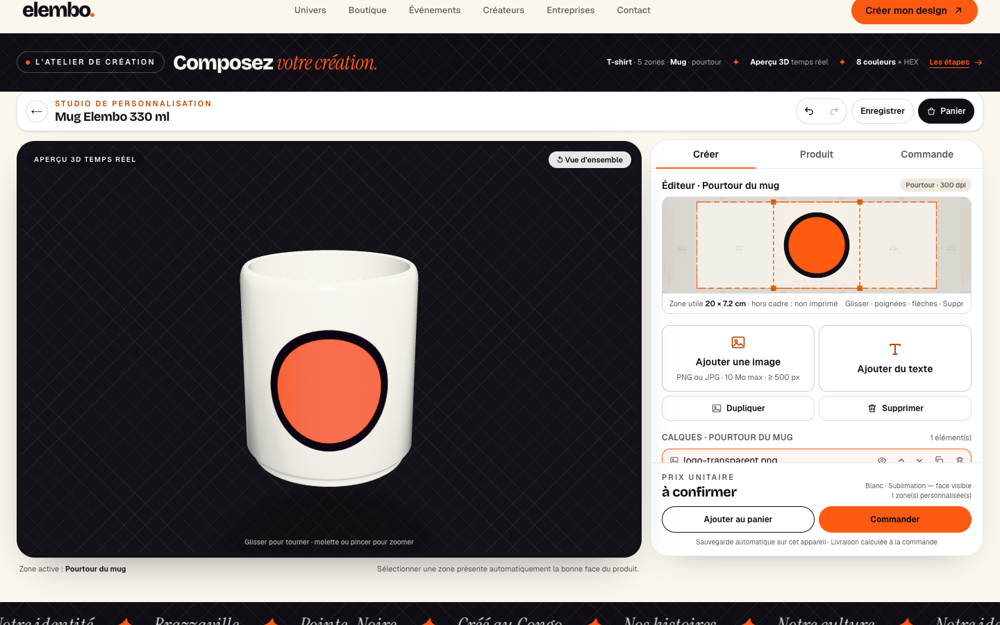
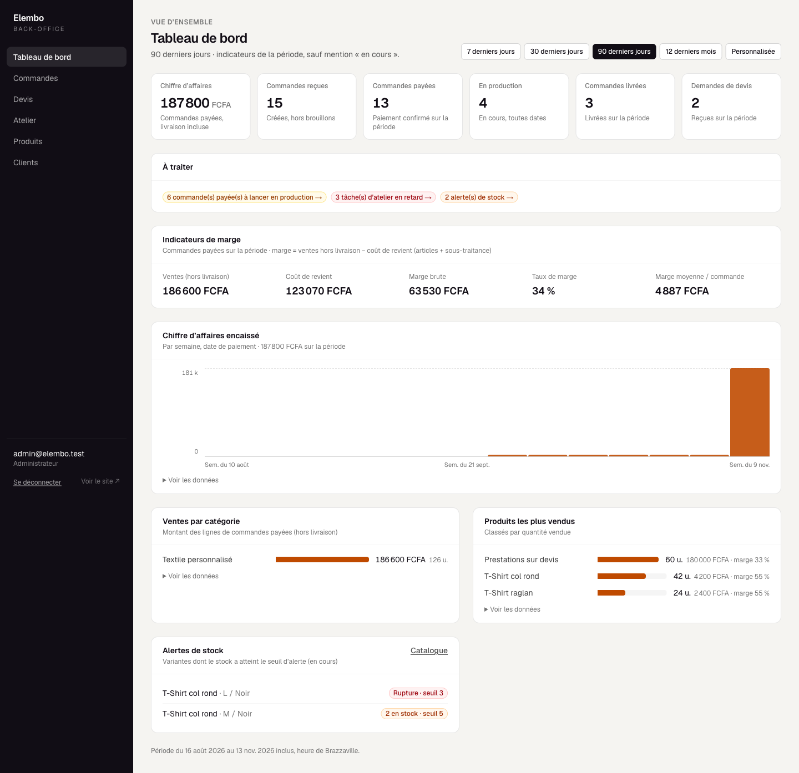
Mode d’emploi
Elembo transforme une idée en objet personnalisé, puis suit cet objet jusqu’à l’atelier. Ce guide couvre les deux côtés du parcours : le studio où l’on compose, et le tableau de bord où l’équipe pilote les commandes, la production et les devis.
Adresse : /personnalisation
Un aperçu 3D en temps réel, cinq zones sur le T-shirt, un pourtour sur le mug, des images et des textes, un aperçu fidèle et le paiement MTN MoMo.
Aucun compte n’est nécessaire pour composer. Le brouillon reste sur l’appareil.
Adresse : /admin
Les ventes, les commandes, les devis, l’atelier, les produits et les clients. Chaque rôle voit ce qui le concerne, et chaque action est tracée.
Accès réservé aux comptes disposant d’un rôle attribué.
Chapitres 1 à 6. Composer un T-shirt ou un mug, vérifier la zone imprimable, enregistrer, commander et payer.
Chapitres 7 à 11. Lire les indicateurs, suivre une commande, piloter l’atelier et traiter les devis.
Chapitres 12 à 14. Le cycle des statuts, le dépannage, les checklists et les fichiers de production.
/admin et, pour l’atelier, aux dossiers de production.Les captures de ce guide ont été réalisées sur l’environnement de démonstration, avec des données de test. Les montants visibles (100 FCFA, livraison à 100 FCFA) sont les tarifs de test validés pour la période de présentation : ils ne constituent pas une offre commerciale définitive. Le prix réellement appliqué est celui de la grille tarifaire au moment de la commande.
Un raccourci, un réglage ou une bonne pratique qui fait gagner du temps.
Une règle à connaître avant de commander ou de faire avancer une commande.
Une capacité encore en validation par l’atelier : on peut composer, mais pas encaisser.
Une copie d’écran de l’environnement de démonstration, avec des données de test.
Sommaire
Un parcours en trois parties, du premier clic dans le studio jusqu’au contrôle qualité à l’atelier.
Côté client, les étapes 1 à 4 se déroulent dans le studio. Côté équipe, l’étape 5 commence dans le tableau de bord, à la rubrique Atelier.
Ce guide décrit l’état de la plateforme au 12 novembre 2026. Les statuts de production et les prix évoluent : la source de vérité reste l’écran, et pour l’équipe, la fiche de la commande.
Choisir un support, composer sur les bonnes zones, vérifier ce qui sera réellement imprimé, puis commander.
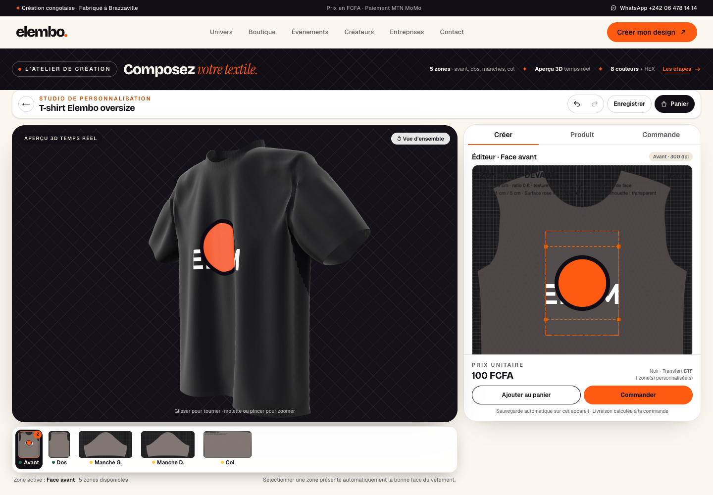
Chapitre 01 · Côté client
Le studio s’ouvre en un clic depuis la boutique. Aucun compte, aucun logiciel à installer : tout se passe dans le navigateur.
Cliquez sur « Créer mon design », dans l’en-tête ou dans le hero.
Sur la fiche d’un T-shirt ou d’un mug, le bouton de personnalisation ouvre le studio directement sur le bon produit.
https://elembo.vercel.app/personnalisation pour le T-shirt, ?produit=mug-personnalise pour le mug, ?produit=tshirt-alt pour le T-shirt col rond.
| Point d’entrée | Ce qu’il ouvre | Quand l’utiliser |
|---|---|---|
/personnalisation | Le studio, avec le produit par défaut (T-shirt Elembo oversize). | Démarrage standard. |
/personnalisation?produit=mug-personnalise | Le studio configuré sur le mug 330 ml. | Lien d’une fiche mug ou d’une campagne. |
/personnalisation?produit=tshirt-alt | Le studio configuré sur le T-shirt col rond. | Produit textile historique. |
/panier | Les créations enregistrées et le panier local. | Reprendre une création ou payer. |
Le studio ne demande pas de créer un compte. Le brouillon, les créations et le panier sont conservés dans le navigateur de l’appareil. Si vous changez d’appareil ou de navigateur, vous ne retrouverez pas la composition.
| Repère | Zone | À quoi elle sert |
|---|---|---|
| 1 | Barre du studio | Retour, nom du produit, annuler/rétablir, Enregistrer, Panier. |
| 2 | Aperçu 3D temps réel | Faire tourner le produit, zoomer, vérifier le rendu. Vue d’ensemble recadre le produit. |
| 3 | Rail des zones | Cinq vignettes (avant, dos, manches, col) avec le nombre d’éléments et un point de statut. |
| 4 | Onglets | Créer (éditeur), Produit (modèle, couleur, procédé), Commande (fichiers et paiement). |
| 5 | Éditeur de zone | Le gabarit de la zone active, la zone imprimable en pointillés orange, les gestes. |
| 6 | Prix et actions | Prix unitaire, nombre de zones personnalisées, Ajouter au panier et Commander. |
Préparez votre visuel avant de l’importer : détourage, fond transparent, contraste et lisibilité. Une image sombre sur un T-shirt noir restera peu lisible, même avec un bon aperçu 3D.
L’aperçu 3D a besoin de WebGL. Si le vêtement ne s’affiche pas, essayez Chrome ou Safari à jour, désactivez les bloqueurs agressifs, puis rechargez la page. Le reste de la boutique continue de fonctionner.
Chapitre 02 · Côté client
Trois gestes suffisent pour se repérer : tourner le produit, choisir une zone, basculer entre les onglets. Le reste est une question de calme et de précision.
Cliquez-glissez (ou glissez au doigt) sur le vêtement pour le faire tourner.
Utilisez la molette de la souris ou pincez avec deux doigts sur mobile.
Vue d’ensemble replace la caméra sur une vue propre du produit.
Chaque zone possède son propre cadrage : sélectionner « Manche gauche » dans le rail place automatiquement la caméra sur la manche, sans que vous ayez à tourner le vêtement à la main. C’est le moyen le plus sûr de vérifier un détail.
Le rail, sous l’aperçu 3D, affiche une vignette réelle de chaque zone, le nombre d’éléments posés et un point de statut. Sa couleur n’est pas décorative : elle indique si la zone est fabricable avec le procédé choisi.
| Point | Statut | Ce que cela signifie |
|---|---|---|
| ● vert | Imprimable | La zone est validée par l’atelier : elle peut être commandée et payée. |
| ● jaune | À valider par l’atelier | La composition et l’aperçu restent possibles, mais la commande est bloquée tant que la zone contient un visuel. |
| ● gris | Non proposé | La zone ou le procédé n’est pas disponible pour ce produit. |
Un chiffre en haut à droite de la vignette indique le nombre d’éléments. Le point en bas à gauche donne le statut. Si une zone jaune contient un visuel, le bouton de paiement restera fermé : c’est volontaire, pour ne jamais encaisser un visuel que l’atelier ne sait pas produire.
| Onglet | Contenu | Quand y aller |
|---|---|---|
| Créer | Éditeur de la zone active, ajout d’image et de texte, calques, réglages de l’élément. | Pendant toute la composition. |
| Produit | Modèle, couleur, procédé de production et zones imprimables. | Au début, puis pour vérifier les statuts. |
| Commande | Fichiers de production, aperçu, tailles, quantités, ville, total et paiement. | À la fin, quand le design est prêt. |
Le studio enregistre automatiquement le brouillon sur l’appareil. Deux actions distinctes méritent d’être connues :
Range la création dans « Mes créations », sur cet appareil. Elle pourra être rouverte plus tard, avec ses cinq zones et ses images.
Ajoute une copie figée de la création au panier. Vous pouvez continuer à modifier le brouillon : le panier garde la version ajoutée.
Annuler / rétablir : boutons dans la barre du studio, ou Ctrl+Z / Ctrl+Shift+Z. Un glisser ou un curseur continu compte pour une seule action.
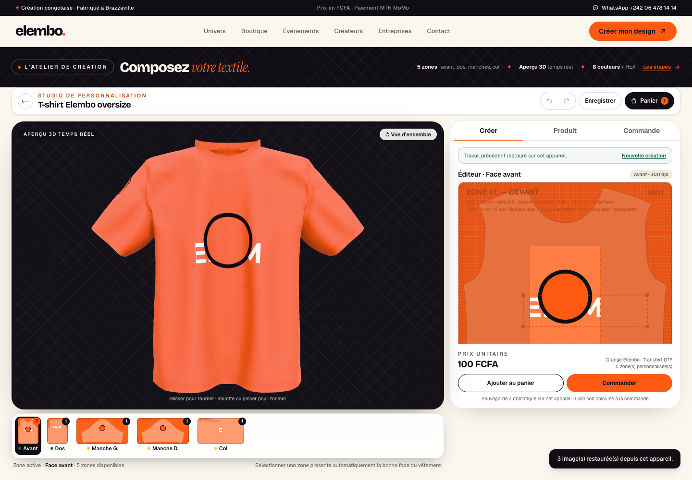
Le bouton « Nouvelle création » (dans le bandeau de reprise) ouvre un projet vierge sans toucher au panier. Si vous changez de support — par exemple d’un T-shirt vers un mug — le travail en cours est d’abord rangé dans « Mes créations », puis un projet vierge démarre sur le nouveau support.
Le brouillon et le panier sont locaux. Vider les données du site, naviguer en fenêtre privée ou changer d’appareil peut faire perdre la composition. En navigation privée, le studio prévient : les images ne pourront pas être conservées après un rechargement.
Chapitre 03 · Côté client
Le T-shirt Elembo oversize offre cinq surfaces indépendantes. On peut y poser plusieurs images et plusieurs textes, chacun avec sa position, son échelle, sa rotation et son calque.
Dans l’onglet Produit, sélectionnez le modèle : T-shirt Elembo oversize (cinq zones, procédé DTF) ou T-shirt col rond (modèle historique, avant et dos). Choisissez ensuite la couleur du tissu parmi les huit teintes, ou saisissez un code HEX pour une teinte exacte.
La couleur du tissu ne modifie jamais les visuels : ils restent tels qu’ils ont été composés. C’est ce qui permet de tester un même logo sur un fond clair puis sur un fond sombre sans le retoucher.
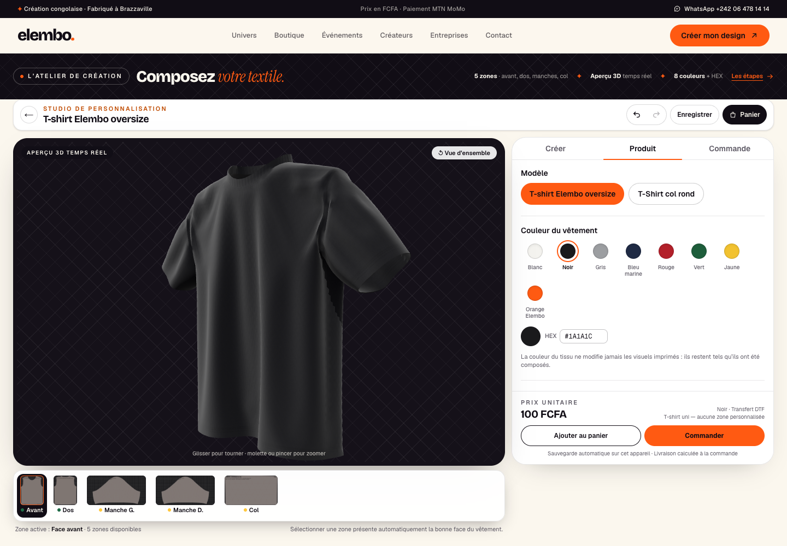
Chaque zone est indépendante. Changer de zone ne recharge rien : les visuels des autres zones sont conservés. Le tableau ci-dessous rappelle les dimensions réellement imprimables en DTF et le statut actuel de chaque zone.
| Zone | Zone imprimable | Statut DTF | Conseil de composition |
|---|---|---|---|
| Avant | 21 × 30 cm | Imprimable | Le grand classique : logo ou texte centré, à 7 cm sous le col. |
| Dos | 25 × 32,4 cm | Imprimable | Une composition plus large, lisible à distance. |
| Manche gauche | 9 × 9 cm | À valider | Petit motif, initiales, badge. La presse de manche reste à confirmer. |
| Manche droite | 9 × 9 cm | À valider | Comme la manche gauche, en miroir. |
| Intérieur du col | 8 × 4,5 cm | À valider | Étiquette intérieure : texte court, très contrasté. |
Le studio laisse composer sur les cinq zones, mais l’atelier n’a validé que l’avant et le dos en DTF. Un visuel sur une manche ou dans le col reste visible et exportable, mais il bloque la commande : le récapitulatif affiche le motif exact. Retirez le visuel de la zone concernée pour débloquer le paiement.
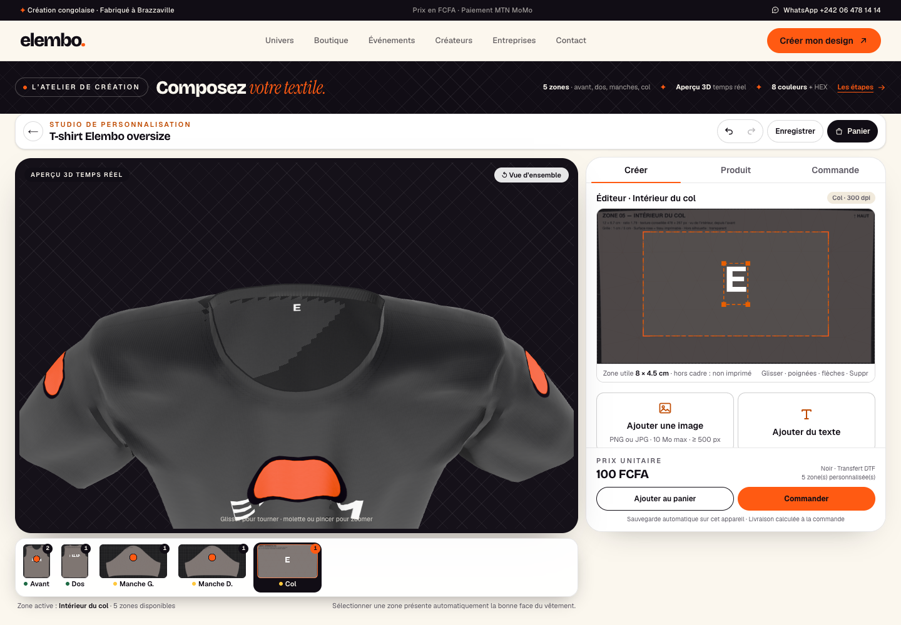
Cliquez sur la vignette de la zone dans le rail (avant, dos, manche gauche, manche droite ou col).
Choisissez un fichier PNG ou JPG, ou glissez-déposez-le dans la zone.
Format, poids et dimensions sont contrôlés. Un refus affiche le motif exact.
Faites-le glisser, redimensionnez-le avec les poignées orange, tournez-le avec la poignée de rotation.
Ce qui dépasse de la zone orange ne sera pas imprimé. Utilisez « Ajuster à la zone » si l’élément est trop grand.
| Règle | Détail |
|---|---|
| Formats | PNG ou JPG uniquement. |
| Poids | 10 Mo maximum par fichier. |
| Dimensions | 500 px minimum sur chaque côté. |
| Transparence | Conservée en PNG. Un fond blanc JPG sera imprimé. |
| Résolution | Plus l’image est grande, plus le tirage sera net. Évitez les captures d’écran agrandies. |
Le bouton « Ajouter du texte » crée un élément typographique indépendant. Vous pouvez en poser plusieurs sur la même zone — « LOGO », « CONGO », « 2026 » — et les traiter séparément.
| Action | Comment |
|---|---|
| Sélectionner | Cliquez sur l’élément dans l’éditeur. |
| Déplacer | Glissez l’élément à la souris ou au doigt. |
| Redimensionner | Tirez une poignée orange. |
| Tourner | Utilisez la poignée de rotation. |
| Affiner | Flèches du clavier pour un déplacement au pixel. |
| Dupliquer | Ctrl+D ou le bouton Dupliquer. |
| Supprimer | Suppr ou le bouton Supprimer. |
| Annuler | Ctrl+Z / Ctrl+Shift+Z. |
Le cadre en pointillés orange n’est pas une décoration : c’est la surface que la presse peut réellement imprimer. Tout ce qui sort de ce cadre est rogné, jamais imprimé. Le studio borne automatiquement les déplacements et signale un élément trop grand ; le bouton « Ajuster à la zone » le ramène à la taille utile avec une marge de sécurité.
Passez sur chaque zone personnalisée et regardez l’aperçu de commande. C’est cet aperçu — et non la vue 3D — qui fait foi pour l’atelier.
Toujours dans l’onglet Produit, la section Procédé de production indique ce que l’atelier sait réellement faire. Le procédé pilote les dimensions imprimables, la densité des fichiers et les zones commandables.
| Procédé | Statut | Ce qu’il change |
|---|---|---|
| Transfert DTF | Disponible | Procédé de l’atelier : 300 dpi, avant 21 × 30 cm, dos 25 × 32,4 cm. Manches et col à valider. |
| Flex / vinyle | À valider | Aplats de couleur et textes simples ; équipement et découpe à confirmer. |
| Impression directe (DTG) | Non proposé | Pas d’imprimante DTG chez l’atelier ou ses partenaires à ce jour. |
| Sublimation intégrale | Non proposé | Nécessite un textile polyester clair et un prestataire équipé. |
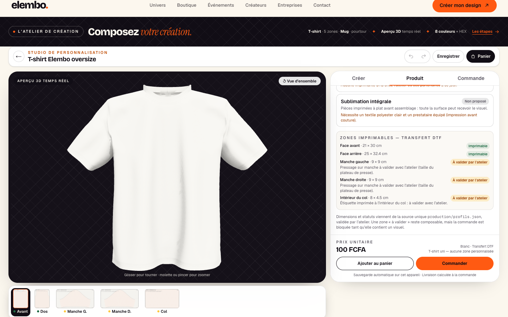
Enregistrer range la création dans « Mes créations ». Ajouter au panier en garde une copie figée pour la commande. Le brouillon continue d’évoluer indépendamment. Après un rechargement, le studio restaure le dernier travail et propose « Nouvelle création » pour repartir de zéro.
Les images d’origine sont conservées sur l’appareil (IndexedDB) : la création peut être rouverte avec ses visuels. En navigation privée, les images peuvent manquer après un rechargement ; le studio le signale.
Chapitre 04 · Côté client
Le mug Elembo 330 ml se personnalise sur un seul pourtour. Un support simple, mais quelques repères à respecter pour que le visuel tombe juste, face à l’anse.
Dans l’onglet Produit, sélectionnez Mug Elembo 330 ml. Comme le changement de support repart d’un projet vierge, le travail en cours sur un T-shirt est d’abord rangé dans « Mes créations ».
Le mug est en céramique, proposé en huit couleurs (blanc, noir, crème, rouge, bleu, vert, jaune, orange Elembo) et en finition brillante. La couleur s’applique à toute la céramique ; l’impression n’est jamais teintée.
| Caractéristique | Valeur |
|---|---|
| Capacité | 330 ml, céramique, finition brillante. |
| Zone | Un seul pourtour : « Pourtour du mug ». |
| Face visible | 20 × 7,2 cm, avec des marges de sécurité de 4 mm. |
| Tour complet | 23,8 × 7,2 cm hors zone de l’anse. |
| Procédés | Sublimation — face visible ou Sublimation — tour complet, 300 dpi. |
| Statut | À valider par l’atelier — presse à mug et mugs sublimables à confirmer. |
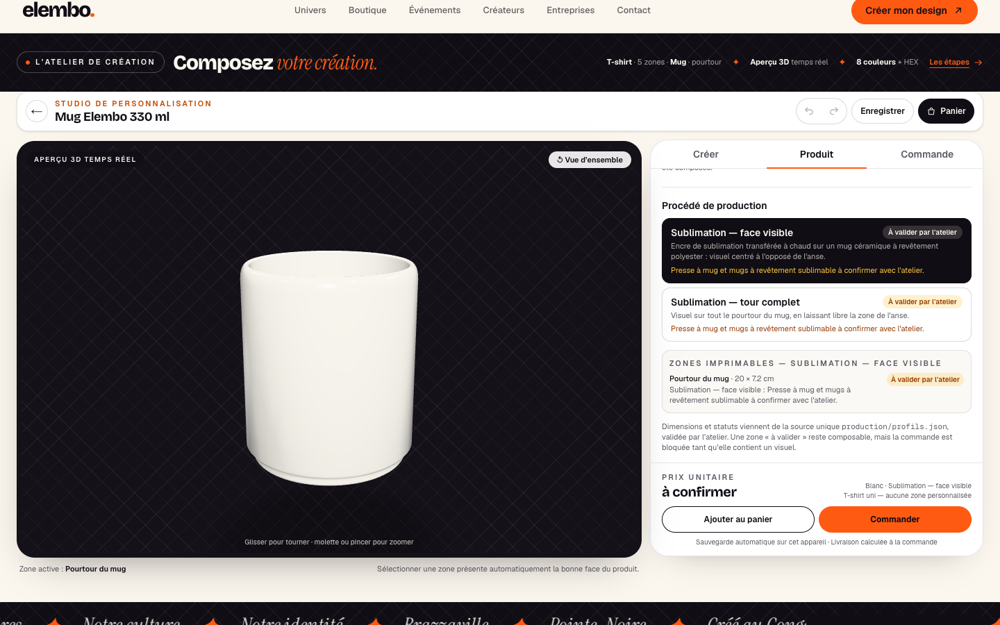
Le rail ne propose qu’une vignette. L’éditeur affiche le gabarit déroulé du mug.
Mêmes règles que pour le T-shirt : PNG/JPG, 10 Mo, 500 px minimum.
La couture est sous l’anse. Le visuel principal doit rester dans la zone visible, centré à l’opposé de l’anse.
Évitez le bord supérieur, le bord inférieur et la couture : 4 mm de marge de sécurité.
Vérifiez le rendu de face, puis de trois quarts. Rien ne doit être coupé par l’anse.
Un logo centré et compact traverse mieux le pourtour qu’un bandeau de texte sur toute la largeur. Si le texte est long, réduisez-le ou passez sur deux lignes.
Un motif placé près de la couture peut disparaître derrière l’anse une fois le mug posé. Laissez respirer les bords.
Le mug se compose, s’aperçoit en 3D et s’exporte. En revanche, la vente en ligne n’est pas encore ouverte : le prix s’affiche « à confirmer », le procédé est « à valider » et le paiement est fermé. Le parcours prévu est le devis ou WhatsApp.
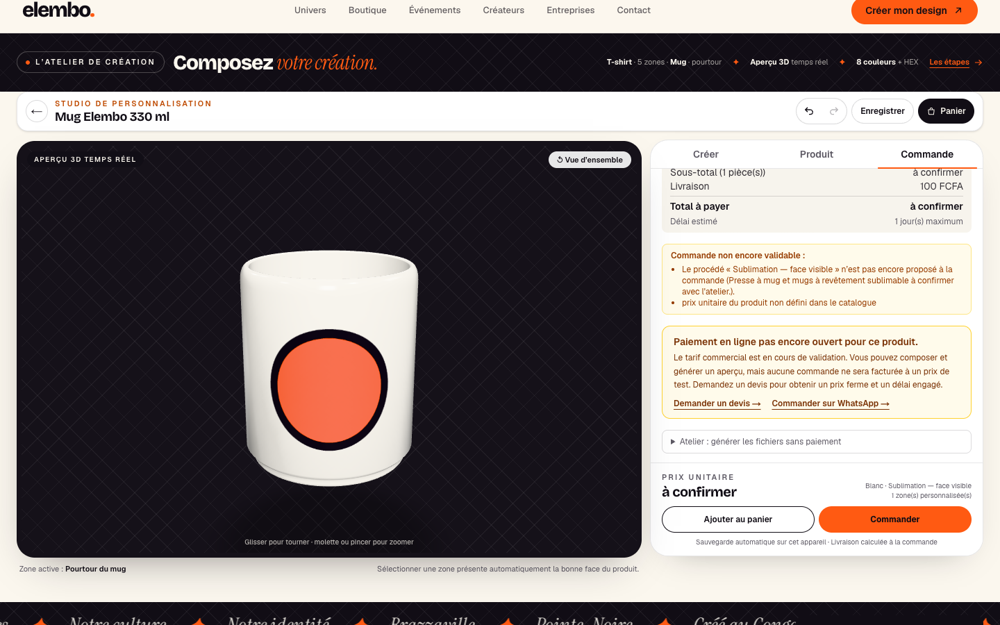
Tant que le prix du mug n’est pas validé dans la grille tarifaire, aucun montant ne doit être annoncé au client. La demande de devis permet de fixer un prix ferme, un délai et les modalités de livraison.
Chapitre 05 · Côté client
Le studio est utilisable au doigt. L’aperçu 3D, le rail de zones et l’éditeur s’empilent verticalement ; les actions essentielles restent accessibles.
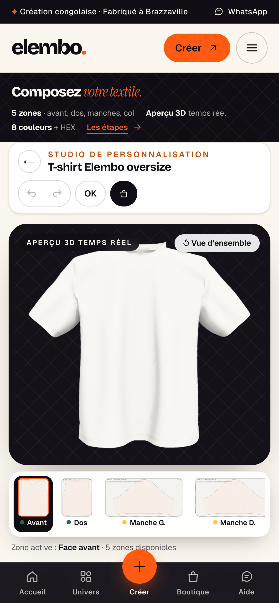
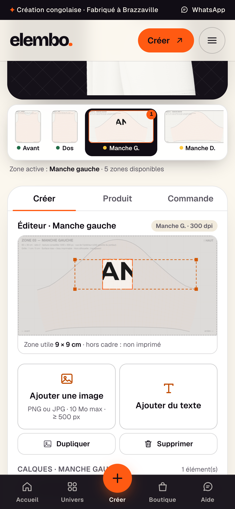
| Élément | Sur mobile |
|---|---|
| Navigation | Barre fixe en bas : Accueil, Univers, Créer (+), Boutique, Aide. |
| Vue 3D | Un doigt pour tourner, deux doigts pour zoomer. |
| Rail des zones | Défilement horizontal ; la zone active est encadrée en orange. |
| Éditeur | Sous l’aperçu. Les boutons Dupliquer et Supprimer remplacent le clavier. |
| Paiement | La demande MTN MoMo s’ouvre sur le téléphone ; validez avec votre code. |
Chapitre 06 · Côté client
La commande est le moment où le design devient un dossier de production. Tout ce qui est affiché dans l’aperçu sera imprimé ; tout ce qui manque bloquera le paiement.
Le panneau affiche les fichiers de production puis le formulaire de commande.
L’aperçu est calculé à partir des mêmes paramètres que le fichier d’impression. C’est votre bon à tirer.
Du S au 3XL pour le T-shirt, une quantité unique pour le mug.
Brazzaville ou Pointe-Noire. Les frais et le délai s’affichent dans le récapitulatif.
Prix unitaire, sous-total, livraison, total à payer et délai estimé (1 à 3 jours).
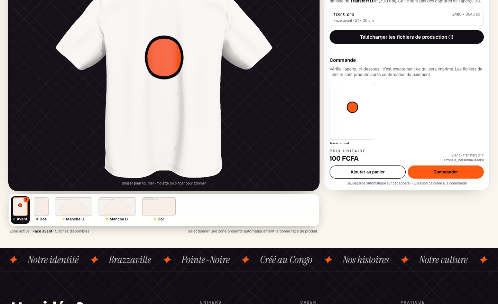
| Champ | Obligatoire | Format attendu |
|---|---|---|
| Nom du client | Non | Libre. |
| Non | Adresse valide, pour le reçu et le suivi. | |
| Numéro MTN MoMo | Oui | 9 chiffres commençant par 06 ou 05, ou format +242. |
| Ville | Oui | Brazzaville ou Pointe-Noire. |
Un numéro incomplet est signalé immédiatement. Le bouton de paiement reste désactivé tant que le numéro n’est pas plausible, qu’aucun visuel n’est posé ou qu’un blocage de production subsiste.
Le montant exact est repris dans le bouton.
Un message MTN Mobile Money invite à valider la transaction.
Vous avez 5 minutes pour confirmer. Au-delà, la demande expire.
L’écran interroge le service de paiement et affiche l’avancement : en attente, confirmé, échec ou expiré.
Les fichiers d’impression sont générés et déposés dans l’archive privée de l’atelier. La commande passe « Payée ».
Les PNG haute résolution et la fiche de production ne sont générés qu’après un paiement confirmé. Un échec ou un dépassement de délai ne produit aucun fichier. En cas de doute, gardez la référence affichée et contactez l’atelier sur WhatsApp.
ELB-… affichée à l’écran.La livraison est assurée à Brazzaville et à Pointe-Noire. Le délai estimé est de 1 à 3 jours selon la quantité. Les frais et le délai affichés dans le récapitulatif sont ceux qui s’appliquent à la commande.
Ajouter au panier enregistre une copie de la création et permet de continuer à composer. La page /panier liste les créations enregistrées et permet de les rouvrir dans le studio. Le paiement MTN reste mono-création : une création est payée à la fois.
Si le bouton de paiement n’apparaît pas, vérifiez l’un de ces cinq points :
Dans ces cas, le studio propose un devis ou une commande WhatsApp plutôt que d’encaisser un montant ou un visuel non validé.
Suivre les ventes, traiter les commandes, piloter l’atelier et transformer les devis en commandes — avec les mêmes données, au même endroit.
Chapitre 07 · Côté équipe
Le back-office est réservé au personnel. Chaque compte possède un rôle, et ce rôle détermine les sections visibles et les actions autorisées.
/admin/connexionOu cliquez sur « Se connecter » depuis le pied de page du site.
Celui fourni par l’administrateur, avec le rôle attribué.
Après plusieurs tentatives, l’accès est temporairement limité.
La section d’accueil dépend de votre rôle.
Un compte sans rôle attribué ne peut pas entrer dans le back-office. Demandez à un administrateur d’attribuer le rôle dans les métadonnées du compte. Le rôle n’est pas modifiable par l’utilisateur lui-même.
| Rôle | Ce qu’il peut faire | Ce qu’il ne peut pas faire |
|---|---|---|
| Administrateur | Tout : ventes, marges, commandes, devis, atelier, produits, clients, permissions. | — |
| Commercial | Devis, commandes, clients, catalogue (hors prix et coûts), export. | Modifier les prix ou les coûts, voir les marges. |
| Atelier | Vue atelier, dossiers de production, statuts de fabrication, stock. | Voir les coordonnées complètes du client, les prix ou les marges. |
| Finance | Chiffre d’affaires, marges, coûts, prix, paiements, facturation. | Traiter les devis, modifier la production. |
La colonne de gauche donne accès aux six rubriques : Tableau de bord, Commandes, Devis, Atelier, Produits et Clients. Les entrées que votre rôle ne permet pas ne sont pas affichées — et les pages revérifient le droit côté serveur.
En bas de la colonne, vous retrouvez votre nom, votre rôle, Se connecter (ou Se déconnecter) et un lien vers le site public.
Chapitre 08 · Côté équipe
Le tableau de bord répond à trois questions : combien avons-nous vendu, qu’y a-t-il à traiter maintenant, et où se situent les marges et les tensions de stock ?
Les boutons en haut à droite changent la période de référence : 7 jours, 30 jours, 90 jours, 12 derniers mois ou une période personnalisée (date de début et date de fin). Les indicateurs de la période sont recalculés ; ceux marqués « en cours » ne suivent pas la période.
| Indicateur | Définition | Lecture |
|---|---|---|
| Chiffre d’affaires | Commandes payées sur la période, livraison incluse. | Le volume encaissé. |
| Commandes reçues | Commandes créées sur la période, hors brouillons. | Le flux entrant. |
| Commandes payées | Paiement confirmé sur la période. | Le flux réellement encaissé. |
| En production | Commandes en cours, toutes dates confondues. | La charge actuelle de l’atelier. |
| Commandes livrées | Livrées sur la période. | La satisfaction de la promesse. |
| Demandes de devis | Demandes reçues sur la période. | Le pipeline commercial. |
Cette carte rassemble les actions concrètes du moment. Chaque badge est cliquable et ouvre la liste pré-filtrée correspondante.
Paiement confirmé, production pas encore démarrée. C’est la priorité absolue : un client a payé.
Échéance dépassée sur une étape de fabrication. À traiter avec le prestataire concerné.
Demandes au statut « Nouveau » qui attendent une réponse commerciale.
Transactions à vérifier avant de relancer ou de rembourser.
Variantes dont le stock a atteint le seuil d’alerte, ou en rupture.
Commandes qui sortent de l’atelier et doivent être remises au client.
La carte « Indicateurs de marge » calcule la marge sur les commandes payées de la période :
Le coût de revient additionne les articles et la sous-traitance. Si une commande payée n’a pas de coût renseigné, un avertissement le signale : la marge est alors surestimée. Pensez à renseigner le coût des produits au catalogue ou des lignes dans la fiche commande.
| Bloc | Ce qu’il montre | Question à se poser |
|---|---|---|
| Chiffre d’affaires encaissé | Les encaissements par semaine ou par jour, à la date de paiement. | La période est-elle homogène ? Y a-t-il un pic à expliquer ? |
| Ventes par catégorie | Le montant des lignes payées, hors livraison. | Quelle famille porte le chiffre d’affaires ? |
| Produits les plus vendus | Le classement par quantité, avec le montant et la marge. | Quel produit faut-il réapprovisionner ou pousser ? |
| Alertes de stock | Les variantes sous le seuil, avec le stock restant. | Faut-il réapprovisionner avant la prochaine campagne ? |
Y a-t-il des commandes payées non lancées ? Des tâches en retard ? Des devis sans réponse ?
Le volume encaissé correspond-il à la période ? Le nombre de commandes est-il cohérent avec le panier moyen ?
Un taux qui baisse peut venir d’un coût de revient manquant, d’une remise ou d’un produit mal tarifé.
Une rupture sur une variante phare peut bloquer des commandes déjà payées.
Ouvrez le tableau de bord sur 7 jours, traitez la file « À traiter », puis passez à l’atelier. Les indicateurs servent à décider, pas seulement à constater.
Chapitre 09 · Côté équipe
La liste des commandes est le poste de conduite commercial : on y cherche une référence, on filtre par statut ou par paiement, on exporte, puis on ouvre la fiche pour agir.
La recherche accepte une référence, un nom, un téléphone ou un email (selon votre rôle). Les filtres permettent de croiser le statut de commande, le statut de paiement et une plage de dates de création.
Les onglets de statut affichent le nombre de commandes correspondantes : Toutes, Brouillon, À valider, En attente de paiement, Payée, À produire, En production, Contrôle qualité, Prête, En livraison, Livrée, Annulée, Remboursement à traiter.
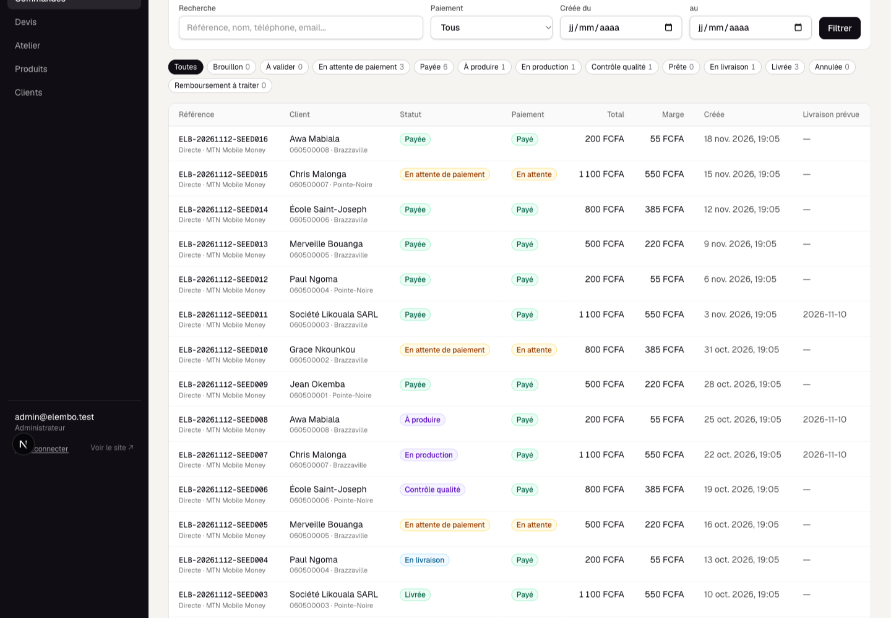
| Colonne | Ce qu’elle signifie |
|---|---|
| Référence | Identifiant unique ELB-AAAAMMJJ-XXXXXXXX, généré côté serveur. |
| Client | Nom et ville. Les coordonnées complètes dépendent de votre rôle. |
| Statut | Étape du cycle commercial (payée, à produire, en production, etc.). |
| Paiement | État du paiement : payé, en attente, échec, anomalie, remboursé. |
| Total | Montant de la commande, livraison incluse. |
| Marge | Marge calculée si votre rôle y a accès. |
| Créée | Date et heure de création. |
| Livraison prévue | Date promise, si elle a été renseignée. |
Deux exports CSV sont disponibles en haut de la liste : Exporter (CSV) pour la vue commande et Exporter le détail des lignes pour le détail article par article. Les filtres actifs sont repris dans l’export. Ces fichiers servent à la comptabilité, au suivi commercial et aux réconciliations.
Un clic sur une référence ouvre la fiche. Elle rassemble tout ce qu’il faut pour décider et agir.
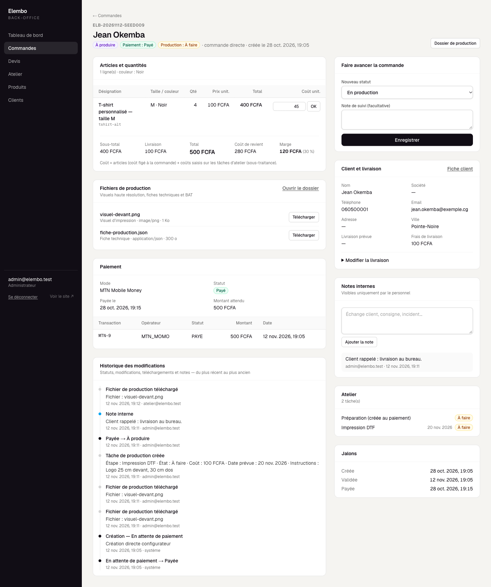
| Action | Règle |
|---|---|
| Changer le statut | Seules les transitions autorisées sont proposées, et elles dépendent du rôle. Une transition invalide est refusée par la base. |
| Ajouter une note | Visible uniquement par le personnel. À utiliser pour tracer un échange, une consigne ou un incident. |
| Modifier la livraison | Réservé aux rôles habilités. La date et les frais sont saisis, jamais inventés. |
| Corriger un coût | Réservé aux rôles financiers. La marge est recalculée à partir de ce coût. |
| Télécharger un fichier | Chaque téléchargement est tracé. Les liens signés sont valables 60 secondes. |
Le paiement confirmé passe la commande « Payée », mais la production reste « À faire ». C’est à l’équipe de la passer à « À produire », puis à « En production ». Le système ne lance jamais la fabrication tout seul.
Elle apparaît dans « À traiter » et dans la vue atelier. Priorité : la lancer en production le jour même.
Vérifiez la transaction et le montant. Ne relancez pas un paiement sans avoir compris la cause.
Le statut « Remboursement à traiter » est une file de traitement, pas une preuve de remboursement effectif. Le paiement doit ensuite être marqué « Remboursé ».
Possible uniquement depuis les statuts prévus. Une commande annulée est terminale et ne peut plus avancer.
Chapitre 10 · Côté équipe
La vue atelier montre les commandes payées à lancer et celles en fabrication. Chaque carte donne accès au dossier de production et à l’étape suivante.
Les filtres reprennent les étapes de fabrication : Tout, Payée, À produire, En production, Contrôle qualité, Prête, et un filtre En retard. Le filtre Prestataire permet de ne voir que les commandes confiées à un partenaire.
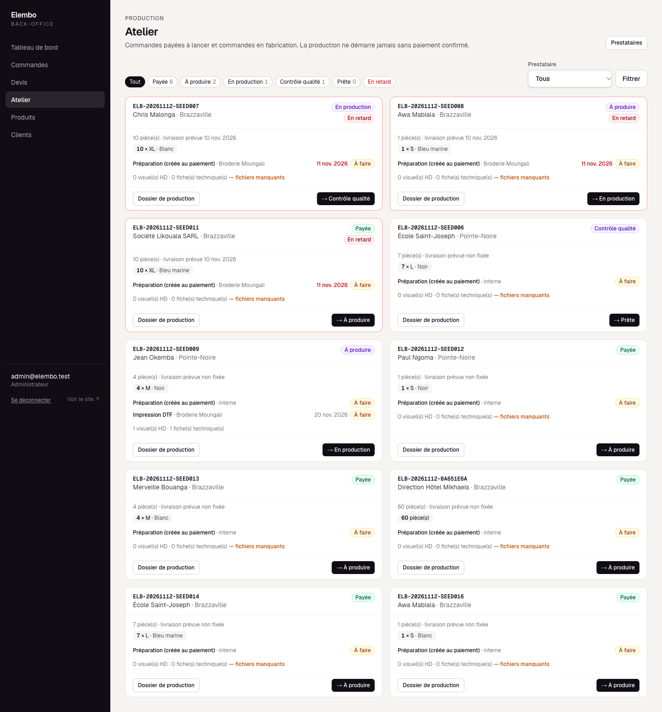
| Élément | Ce qu’il faut vérifier |
|---|---|
| Référence et client | La bonne commande, la bonne ville. |
| Statut et retard | Le badge d’étape et l’alerte rouge « En retard ». |
| Quantités | Le nombre de pièces, la répartition par taille et par couleur. |
| Tâche d’atelier | Le prestataire, la date prévue et l’état (à faire, en cours, terminé). |
| Fichiers | Le nombre de visuels HD et de fiches techniques. « Fichiers manquants » est un signal d’alerte. |
| Actions | Dossier de production et bouton d’étape suivante. |
Le bouton d’étape suivante fait avancer la commande d’un cran, dans le sens de la fabrication. Une commande peut aussi reculer d’un cran en cas d’erreur (par exemple, de « En production » vers « À produire »). Chaque transition est journalisée avec l’acteur.
La vue atelier ne montre que les commandes payées. Une commande non payée ne doit jamais être imprimée. Si un doute existe sur un paiement, vérifiez la fiche commande avant de lancer quoi que ce soit.
Le dossier rassemble la fiche technique et les fichiers. Il s’ouvre depuis la carte atelier ou depuis la fiche commande.
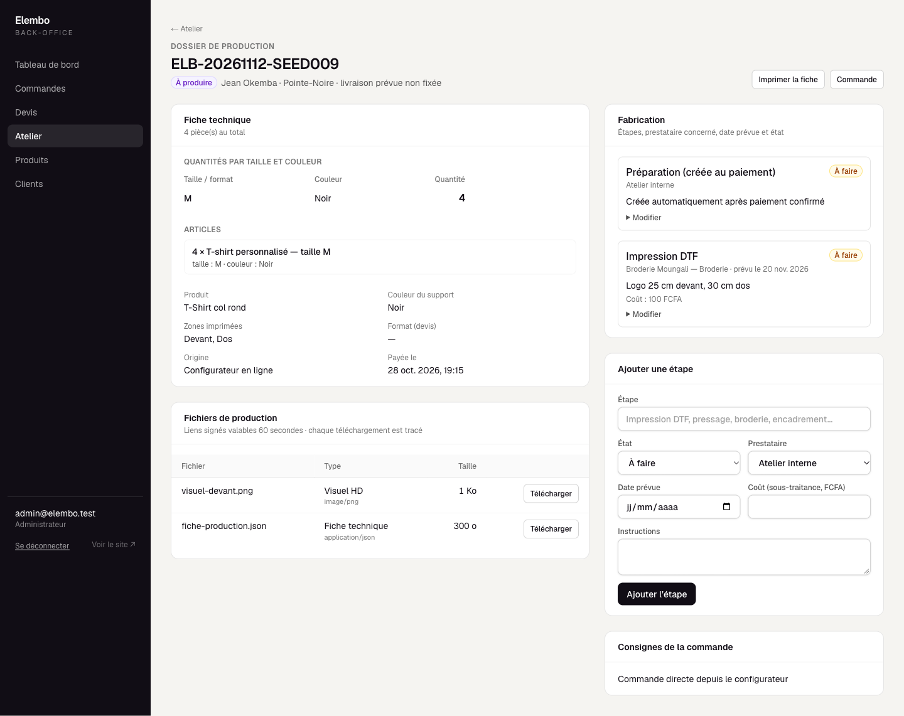
Les fichiers sont accessibles par des liens signés valables 60 secondes. Chaque téléchargement est tracé dans l’historique. Téléchargez les visuels avant de transmettre le dossier à un prestataire, et vérifiez que le nombre de visuels correspond aux zones personnalisées.
Chapitre 11 · Côté équipe
Le devis est un objet distinct de la commande. Il se traite, se propose, se valide, puis se transforme explicitement en commande. Rien n’est automatique.
Vérifiez la faisabilité technique, les fournitures, la sous-traitance, le délai et le coût estimé. Consignez l’analyse dans la fiche.
Renseignez le montant proposé, la marge estimée et les conditions (délai, livraison, BAT).
Le prix doit être validé par un rôle habilité (administrateur ou finance) avant d’être présenté comme ferme.
Le client accepte la proposition depuis son suivi de devis, protégé par sa session.
Depuis un devis accepté, le formulaire « Transmission à l’atelier » crée une commande BROUILLON avec le mode de paiement, les frais, la ville, l’adresse et la date prévue.
La commande suit ensuite son cycle normal : validation, paiement, production, livraison.
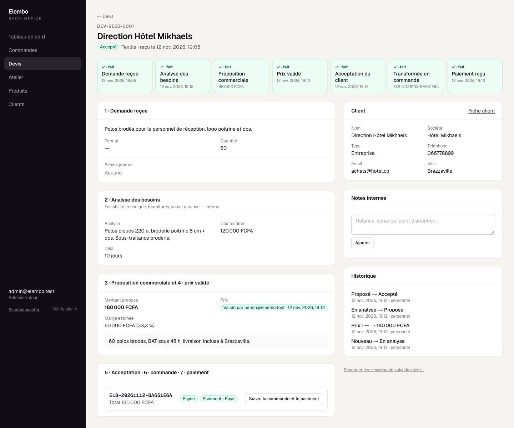
| Règle | Conséquence |
|---|---|
| Un devis accepté n’est pas une commande | La conversion est une action staff explicite, idempotente et tracée. |
| Un prix non validé n’est pas ferme | Le prix proposé doit être validé avant d’être communiqué comme définitif. |
| La commande créée est un brouillon | Elle doit être complétée puis validée avant paiement. |
| Les fichiers du devis sont copiés | La commande garde les pièces jointes et l’historique du devis. |
| Les sessions de suivi se révoquent | Un administrateur peut révoquer les sessions de suivi ouvertes par le client. |
Avant de transformer un devis, vérifiez que la proposition est validée, que le client a accepté et que les fichiers nécessaires sont présents. Une conversion hâtive crée une commande difficile à corriger.
Les statuts, les questions qui reviennent, les checklists et les fichiers de production. De quoi travailler sans rouvrir tout le guide.
Chapitre 12 · Annexe
Une commande avance dans un ordre précis. Le paiement et la fabrication sont deux étapes distinctes : c’est la règle qui structure tout le back-office.
Statuts terminaux ou exceptionnels : Annulée et Remboursement à traiter.
| Statut | Signification | Qui peut le poser |
|---|---|---|
| Brouillon | Commande en préparation, non validée. | Admin, commercial. |
| À valider | La commande attend une validation interne. | Admin, commercial. |
| En attente de paiement | Prête, le paiement n’est pas encore confirmé. | Admin, commercial. |
| Payée | Paiement confirmé. La production reste à lancer. | Paiement ou confirmation d’encaissement — jamais à la main. |
| À produire | L’atelier doit prendre la commande en charge. | Admin, commercial, atelier. |
| En production | La fabrication est lancée. | Admin, atelier. |
| Contrôle qualité | La fabrication est terminée, on vérifie. | Admin, atelier. |
| Prête | La commande est prête à être livrée. | Admin, atelier. |
| En livraison | La commande est en cours de livraison. | Admin, commercial, atelier. |
| Livrée | La commande a été remise au client. | Admin, commercial, atelier. |
| Annulée | Commande arrêtée définitivement. | Admin, commercial, finance. |
| Remboursement à traiter | File de traitement d’un remboursement. | Admin, finance. |
Non requis En attente Payé Échec Anomalie Remboursé
À faire En cours Terminé Bloqué Annulé
Nouveau En analyse Proposé Accepté Refusé Expiré
ELB-AAAAMMJJ-XXXXXXXX, générée côté serveur.Chapitre 13 · Annexe
Les blocages les plus courants, côté studio comme côté back-office, et la première chose à vérifier.
Le modèle 3D ne s’affiche pas.
Vérifiez que WebGL est disponible (Chrome ou Safari à jour), désactivez les bloqueurs, rechargez. Si le problème persiste, le studio reste utilisable en mode dégradé pour le reste de la page.
Mon image est refusée.
Le fichier doit être PNG ou JPG, faire moins de 10 Mo et mesurer au moins 500 px de côté. Le message affiché donne le motif exact.
Je ne retrouve pas ma création.
Elle est liée à l’appareil et au navigateur. Vérifiez que vous êtes sur le même appareil, en navigation normale, et ouvrez « Mes créations » ou /panier.
Le bouton « Payer » est grisé.
Vérifiez qu’un visuel est posé, que le numéro MTN est valide, qu’aucune zone « à valider » n’est utilisée et que le prix du produit est validé.
Le paiement n’a pas été confirmé.
La demande MTN expire au bout de 5 minutes. Vérifiez le SMS, le solde et le code. Vous pouvez relancer ; en cas d’échec répété, contactez l’atelier avec la référence.
J’ai payé mais l’atelier n’a rien reçu.
Les fichiers sont générés après confirmation du paiement. Si l’envoi a échoué, l’écran le signale et invite à transmettre les fichiers par WhatsApp avec la référence.
Le mug affiche « à confirmer ».
C’est normal : la vente en ligne du mug n’est pas encore ouverte. Le studio permet de composer et d’exporter, puis de demander un devis ou de commander sur WhatsApp.
Le back-office refuse mon accès.
Votre compte doit avoir un rôle attribué par un administrateur. Un compte sans rôle ne peut pas entrer, même avec un mot de passe correct.
Le tableau de bord est indisponible.
La base ne répond pas ou une migration n’est pas appliquée. Prévenez l’administrateur ; les autres pages peuvent rester accessibles.
Je ne peux pas changer le statut.
La transition n’est peut-être pas autorisée pour ce statut ou pour votre rôle. La base refuse toute transition hors du cycle prévu.
La livraison est bloquée.
La ville n’a peut-être pas de tarif défini. Le système refuse d’inventer un montant : faites fixer le tarif dans la grille.
Un fichier de production manque.
Vérifiez que la zone a bien un visuel et que le paiement est confirmé. Les fichiers sont nommés par zone : front.png, back.png, left-sleeve.png, right-sleeve.png, collar.png, wrap.png.
Chapitre 14 · Annexe
Trois listes courtes pour ne rien oublier : avant de composer, avant de payer, après la commande.
ELB-… est notée et communiquée au client.| Fichier | Contenu | Densité |
|---|---|---|
front.png | Visuel de la face avant, fond transparent, dimensions physiques de la zone. | 300 dpi (DTF) |
back.png | Visuel du dos. | 300 dpi (DTF) |
left-sleeve.png | Visuel de la manche gauche, si la zone est validée. | 300 dpi |
right-sleeve.png | Visuel de la manche droite, si la zone est validée. | 300 dpi |
collar.png | Étiquette intérieure du col, si la zone est validée. | 300 dpi |
wrap.png | Pourtour du mug. | 300 dpi |
fiche-production.txt | Fiche lisible pour WhatsApp ou email : procédé, positions, textes, tailles. | — |
fiche-production.json | Même fiche, structurée pour la traçabilité et l’atelier. | — |
Le procédé et sa densité, puis pour chaque élément : type, contenu, police et corps en centimètres, couleur, alignement, position du centre depuis le coin haut-gauche de la zone, dimensions, rotation et, le cas échéant, l’avertissement de débordement. Un imprimeur peut travailler directement avec cette fiche.
Un beau visuel ne suffit pas : ce qui compte, c’est un fichier propre, une zone respectée et un paiement confirmé. Le reste — la 3D, les calques, les couleurs — est là pour vous aider à y arriver.
Ce guide suit la plateforme au plus près. Si un écran a changé, si une règle n’est plus la bonne, signalez-le : le guide se corrige comme le produit.
Guide d’utilisation Elembo · Édition du 12 novembre 2026 · Smart Vision Congo (SARLU) · Brazzaville, République du Congo.